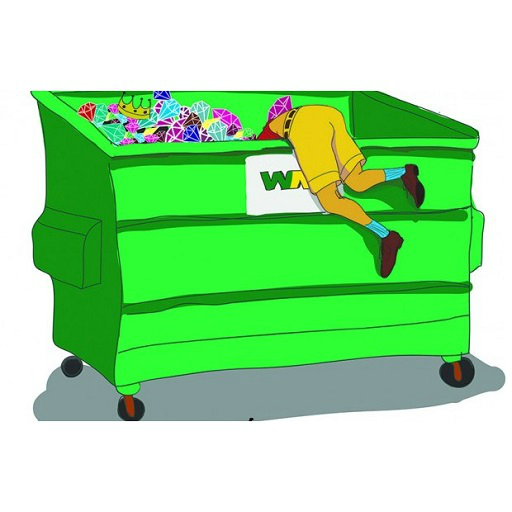
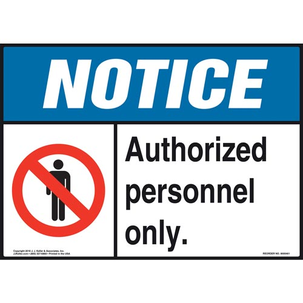
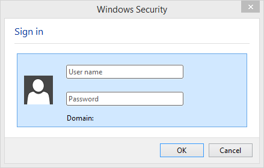
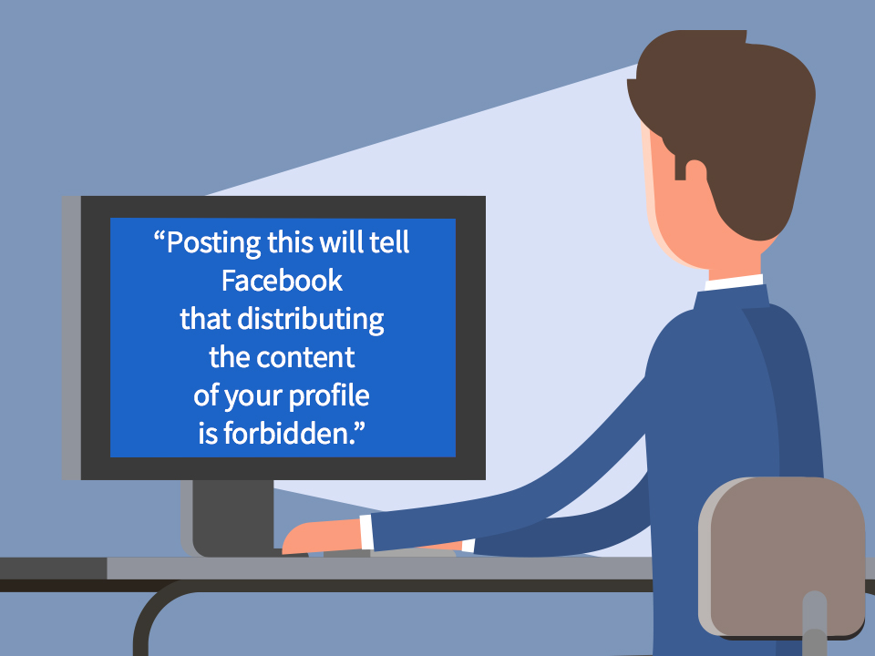

Instant Chat Messengers
Instant Chat MessengersGathering personal information such as birthdays, adress, mobile numbers etc. by chatting with a selected online user.


Social Engineering is the process of convincing people to reveal confidential information.
It is the trick to gain important information by taking advantage of the basic human nature.
An attacker predents that he is from a company and calls Ram a office worker.
Here is the conversation between attacker and Ram.
Attacker-Hi we are from XYZ company. Your number has been selected in the lucky draw and you have won $10 million.
We would need your bank details for futher transanction.
Ram(attracted by the prize he gives all his details)-Okay. Here are my details. Do you need anything else?
Attacker- No. The money will be transfered in 3 days.Thankyou.
The attacker will now be able to conduct an attack over Ram's account.
Human Based Social Engineering use direct interactions to exploit or manipulate people for providing the confidential information.
These attacks mainly use impersonation.
Methods of Human Based Social Engineering include-
Eavesdropping
Eavesdropping means unauthorisized listening of conversatio or reading of messages.
It is the interception of any form of communication such as audio or video.
It can also be done over telephone lines,email and other methods of instant messages.
Shoulder Surfing
Shoulder Surfing is the procedure or steps where the attacker looks over the user's shoulder to gain critical
informationsuch as passwords, Personal identification number, account numbers, credit card information, etc.
Theses attacks can be performed either from a close range or froma longer range.

Dumpster Diving
Dumpster Diving Includes searching for sensitive information in trash bins.
It involves the collection of phone bills, contact information, finanicial information, operation related information, etc.
Dumpster can be used in support of acamedic research.

Posing as a legitimate end user
The attacker wearing a fake ID badge enters a secured area by closely following an authorized person through a door requiring key
access.

Pop-up Windows
Windows that suddenly popup while surfing through the Internet and ask users' information to login or sign-in.

Chain Letters
Emails that offer free gifts or vouchers such as money or cashback and software on the condition that the user has to forword the
email to the said number of persons.
Spam Email
Irrelevant and unwanted emails that collect the fanancial information, socila security numbers and network information.
Hoax Letters
Emails that issue warnings to the user on new viruses, Trojans or worms that may harm the users' system.
Instant Chat Messengers
Gathering personal information such as birthdays, adress, mobile numbers etc. by chatting with a selected online user.
 Social Networking Website
Social Networking Website
Computer-based social engineering is carried out through social networking websites such as facebook, twitter etc.
Many of them use social networking sites making friends online, chatting with them, sharing photos etc.
Social networking websites acts as a biggest human identification database.
Attackers can gather information about a person from the social networking websites such as photos, address, eductional background, family members etc.